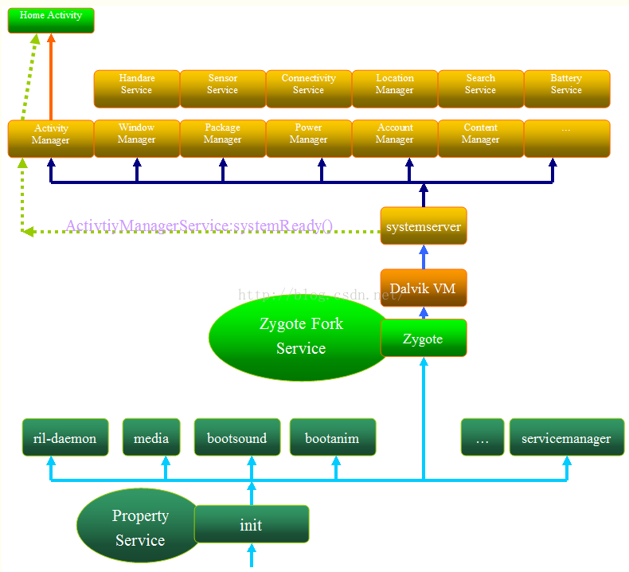

11.2.1. init天子一号进程
核心源码
Source |
Path |
init.rc |
system/core/rootdir/init.rc |
init.cpp |
system/core/init/init.cpp |
main.cpp |
system/core/init/main.cpp |
first_stage_init.cpp |
system/core/init/first_stage_init.cpp |
property_service.cpp |
system/core/init/property_service.cpp |
parser.cpp |
system/core/init/parser.cpp |
log.cpp |
system/core/base/logging.cpp |
service.cpp |
system/core/init/service.cpp |
signal_handler.cpp |
system/core/init/signal_handler.cpp |
action.cpp |
system/core/init/action.cpp |
builtins.cpp |
system/core/init/builtins.cpp |
selinux.cpp |
system/core/init/selinux.cpp |
系统启动
上电后bootrom代码运行，引导bootloader程序
bootloader运行，把OS拉起来
linux内核启动后，在文件系统中寻找
init文件，启动init进程启动
Zygote进程,创建JavaVM并为JavaVM注册JNI，创建服务端socket启动
SystemServer进程,启动Binder线程池和SystemServiceManager，并且启动各种系统服务启动Launcher,SystemServer启动的ActivityManagerServer会负责启动Launcher,Launcher启动后会将已安装的应用快捷图标显示到界面上
启动框架图

init进程
备注
init进程，它是 内核启动的第一个用户级进程 ,进程号为1，android所以进程的共同始祖都是init
//system/core/init/main.cpp
int main(int argc, char** argv) {
//判断是否需要启动ueventd
//ueventd主要负责设备节点的创建，权限设定等一系列工作
if (!strcmp(basename(argv[0]), "ueventd")) {
return ueventd_main(argc, argv);
}
if (argc > 1) {
//参数为subcontext,初始化日志系统
if (!strcmp(argv[1], "subcontext")) {
android::base::InitLogging(argv, &android::base::KernelLogger);
const BuiltinFunctionMap& function_map = GetBuiltinFunctionMap();
return SubcontextMain(argc, argv, &function_map);
}
//启动selinux安全策略
if (!strcmp(argv[1], "selinux_setup")) {
return SetupSelinux(argv);
}
//启动init进程第二阶段
if (!strcmp(argv[1], "second_stage")) {
return SecondStageMain(argc, argv);
}
}
//默认启动init进程第一阶段
return FirstStageMain(argc, argv);
}
ueventd
用于管理/dev目录下的设备节点，以及当硬件设备插入或者拔出时，系统负责处理用户空间对应的事件．在Android中对应的用户空间程序就是 ueventd .
从全局来看，ueventd启动时，会为所有当前注册的设备重新生成uevent,主要就是遍历/sys目录中的uevent文件，并且向其写入add,从而导致内核生成并且重新发送 uevent事件信息给所有注册的设备．
备注
为什么要这么做，因为这些设备注册的时候ueventd还没有运行，所以无法接收到完整的设备信息．所有要重新激活以便
11.2.1.1. init进程—第一阶段
//system/core/init/first_stage_init.cpp
int FirstStageMain(int argc, char** argv) {
if (REBOOT_BOOTLOADER_ON_PANIC) {
InstallRebootSignalHandlers(); //init crash时重启引导加载程序
}
//用于记录启动时间
boot_clock::time_point start_time = boot_clock::now();
std::vector<std::pair<std::string, int>> errors;
#define CHECKCALL(x) \
if ((x) != 0) errors.emplace_back(#x " failed", errno);
// Clear the umask.
umask(0);
CHECKCALL(clearenv());
CHECKCALL(setenv("PATH", _PATH_DEFPATH, 1));
// Get the basic filesystem setup we need put together in the initramdisk
// on / and then we'll let the rc file figure out the rest.
//挂载tmpfs文件系统
CHECKCALL(mount("tmpfs", "/dev", "tmpfs", MS_NOSUID, "mode=0755"));
CHECKCALL(mkdir("/dev/pts", 0755));
CHECKCALL(mkdir("/dev/socket", 0755));
//挂载devpts文件系统
CHECKCALL(mount("devpts", "/dev/pts", "devpts", 0, NULL));
#define MAKE_STR(x) __STRING(x)
//挂载proc文件系统
CHECKCALL(mount("proc", "/proc", "proc", 0, "hidepid=2,gid=" MAKE_STR(AID_READPROC)));
#undef MAKE_STR
// Don't expose the raw commandline to unprivileged processes.
//收紧cmdline的权限
CHECKCALL(chmod("/proc/cmdline", 0440));
std::string cmdline;
android::base::ReadFileToString("/proc/cmdline", &cmdline);
gid_t groups[] = {AID_READPROC};
CHECKCALL(setgroups(arraysize(groups), groups));
//挂载sysfs文件系统
CHECKCALL(mount("sysfs", "/sys", "sysfs", 0, NULL));
//挂载selinuxfs文件系统
CHECKCALL(mount("selinuxfs", "/sys/fs/selinux", "selinuxfs", 0, NULL));
//创建kmsg节点，用于输出log信息
CHECKCALL(mknod("/dev/kmsg", S_IFCHR | 0600, makedev(1, 11)));
if constexpr (WORLD_WRITABLE_KMSG) {
CHECKCALL(mknod("/dev/kmsg_debug", S_IFCHR | 0622, makedev(1, 11)));
}
//创建设备节点
CHECKCALL(mknod("/dev/random", S_IFCHR | 0666, makedev(1, 8)));
CHECKCALL(mknod("/dev/urandom", S_IFCHR | 0666, makedev(1, 9)));
// This is needed for log wrapper, which gets called before ueventd runs.
CHECKCALL(mknod("/dev/ptmx", S_IFCHR | 0666, makedev(5, 2)));
CHECKCALL(mknod("/dev/null", S_IFCHR | 0666, makedev(1, 3)));
// These below mounts are done in first stage init so that first stage mount can mount
// subdirectories of /mnt/{vendor,product}/. Other mounts, not required by first stage mount,
// should be done in rc files.
// Mount staging areas for devices managed by vold
// See storage config details at http://source.android.com/devices/storage/
CHECKCALL(mount("tmpfs", "/mnt", "tmpfs", MS_NOEXEC | MS_NOSUID | MS_NODEV,
"mode=0755,uid=0,gid=1000"));
// /mnt/vendor is used to mount vendor-specific partitions that can not be
// part of the vendor partition, e.g. because they are mounted read-write.
//创建可供读写的vendor目录
CHECKCALL(mkdir("/mnt/vendor", 0755));
// /mnt/product is used to mount product-specific partitions that can not be
// part of the product partition, e.g. because they are mounted read-write.
//创建可供读写的product目录
CHECKCALL(mkdir("/mnt/product", 0755));
// /debug_ramdisk is used to preserve additional files from the debug ramdisk
CHECKCALL(mount("tmpfs", "/debug_ramdisk", "tmpfs", MS_NOEXEC | MS_NOSUID | MS_NODEV,
"mode=0755,uid=0,gid=0"));
#undef CHECKCALL
... ...
}
这部分主要用于创建和挂载启动时所需的文件目录
int FirstStageMain(int argc, char **argv) {
... ...
/*01. 创建设备节点，挂载文件系统*/
// Now that tmpfs is mounted on /dev and we have /dev/kmsg, we can actually
// talk to the outside world...
//把标准输入，输出和错误重定向到到/dev/null
SetStdioToDevNull(argv);
//初始化kernel log系统，供用户打印log
InitKernelLogging(argv);
LOG(INFO) << "init first stage started!";
auto want_console = ALLOW_FIRST_STAGE_CONSOLE ? FirstStageConsole(cmdline) : 0;
//加载linux kernel modules
if (!LoadKernelModules(IsRecoveryMode() && !ForceNormalBoot(cmdline), want_console)) {
if (want_console != FirstStageConsoleParam::DISABLED) {
LOG(ERROR) << "Failed to load kernel modules, starting console";
} else {
LOG(FATAL) << "Failed to load kernel modules";
}
}
//是否启用终端
if (want_console == FirstStageConsoleParam::CONSOLE_ON_FAILURE) {
StartConsole();
}
//检查uboot传参，androidboot.force_normal_boot=1是否存在,若存在则创建first_stage_ramdisk目录，并挂载目录后切换
//根文件系统
if (ForceNormalBoot(cmdline)) {
mkdir("/first_stage_ramdisk", 0755);
// SwitchRoot() must be called with a mount point as the target, so we bind mount the
// target directory to itself here.
if (mount("/first_stage_ramdisk", "/first_stage_ramdisk", nullptr, MS_BIND, nullptr) != 0) {
LOG(FATAL) << "Could not bind mount /first_stage_ramdisk to itself";
}
SwitchRoot("/first_stage_ramdisk");
}
// If this file is present, the second-stage init will use a userdebug sepolicy
// and load adb_debug.prop to allow adb root, if the device is unlocked.
if (access("/force_debuggable", F_OK) == 0) {
std::error_code ec; // to invoke the overloaded copy_file() that won't throw.
if (!fs::copy_file("/adb_debug.prop", kDebugRamdiskProp, ec) ||
!fs::copy_file("/userdebug_plat_sepolicy.cil", kDebugRamdiskSEPolicy, ec)) {
LOG(ERROR) << "Failed to setup debug ramdisk";
} else {
// setenv for second-stage init to read above kDebugRamdisk* files.
setenv("INIT_FORCE_DEBUGGABLE", "true", 1);
}
}
//挂载fstab中定义的分区设备
if (!DoFirstStageMount()) {
LOG(FATAL) << "Failed to mount required partitions early ...";
}
struct stat new_root_info;
if (stat("/", &new_root_info) != 0) {
old_root_dir.reset();
}
if (old_root_dir && old_root_info.st_dev != new_root_info.st_dev) {
FreeRamdisk(old_root_dir.get(), old_root_info.st_dev);
}
//初始化安全框架: Android Verify Boot, AVB主要用于防止文件系统本身被篡改
//还包含了防止系统回滚的功能，以免有人回滚系统并利用以前的漏洞
SetInitAvbVersionInRecovery();
setenv(kEnvFirstStageStartedAt, std::to_string(start_time.time_since_epoch().count()).c_str(),1);
//启动init进程，传入参数selinux_setup,执行命令/system/bin/init selinux_setup
const char* path = "/system/bin/init";
const char* args[] = {path, "selinux_setup", nullptr};
auto fd = open("/dev/kmsg", O_WRONLY | O_CLOEXEC);
dup2(fd, STDOUT_FILENO);
dup2(fd, STDERR_FILENO);
close(fd);
execv(path, const_cast<char**>(args));
return 1;
}
11.2.1.2. init进程—第二阶段
init第二阶段主要是启动属性服务，解析init.rc文件并启动相关进程
SetupSelinux
int SetupSelinux(char** argv) {
//重定向输入输出
SetStdioToDevNull(argv);
//初始化kernel log
InitKernelLogging(argv);
//init crash时重启引导加载程序
if (REBOOT_BOOTLOADER_ON_PANIC) {
//发送signal重启系统
InstallRebootSignalHandlers();
}
boot_clock::time_point start_time = boot_clock::now();
MountMissingSystemPartitions();
// Set up SELinux, loading the SELinux policy.
//设置selinux log回调函数
SelinuxSetupKernelLogging();
//初始化selinux，导入selinux策略
SelinuxInitialize();
// We're in the kernel domain and want to transition to the init domain. File systems that
// store SELabels in their xattrs, such as ext4 do not need an explicit restorecon here,
// but other file systems do. In particular, this is needed for ramdisks such as the
// recovery image for A/B devices.
if (selinux_android_restorecon("/system/bin/init", 0) == -1) {
}
//启动第二阶段程序
setenv(kEnvSelinuxStartedAt, std::to_string(start_time.time_since_epoch().count()).c_str(), 1);
const char* path = "/system/bin/init";
const char* args[] = {path, "second_stage", nullptr};
execv(path, const_cast<char**>(args));
// execv() only returns if an error happened, in which case we
// panic and never return from this function.
return 1;
}
SecondStageMain
int SecondStageMain(int argc, char** argv) {
//init crash时重启系统
if (REBOOT_BOOTLOADER_ON_PANIC) {
InstallRebootSignalHandlers();
}
boot_clock::time_point start_time = boot_clock::now();
trigger_shutdown = [](const std::string& command) { shutdown_state.TriggerShutdown(command); };
//重定向输入输出
SetStdioToDevNull(argv);
InitKernelLogging(argv);
LOG(INFO) << "init second stage started!";
// Init should not crash because of a dependence on any other process, therefore we ignore
// SIGPIPE and handle EPIPE at the call site directly. Note that setting a signal to SIG_IGN
// is inherited across exec, but custom signal handlers are not. Since we do not want to
// ignore SIGPIPE for child processes, we set a no-op function for the signal handler instead.
{
struct sigaction action = {.sa_flags = SA_RESTART};
action.sa_handler = [](int) {};
sigaction(SIGPIPE, &action, nullptr);
}
// Set init and its forked children's oom_adj.
if (auto result =
WriteFile("/proc/1/oom_score_adj", StringPrintf("%d", DEFAULT_OOM_SCORE_ADJUST));
!result.ok()) {
LOG(ERROR) << "Unable to write " << DEFAULT_OOM_SCORE_ADJUST
<< " to /proc/1/oom_score_adj: " << result.error();
}
// Set up a session keyring that all processes will have access to. It
// will hold things like FBE encryption keys. No process should override
// its session keyring.
keyctl_get_keyring_ID(KEY_SPEC_SESSION_KEYRING, 1);
// Indicate that booting is in progress to background fw loaders, etc.
close(open("/dev/.booting", O_WRONLY | O_CREAT | O_CLOEXEC, 0000));
// See if need to load debug props to allow adb root, when the device is unlocked.
const char* force_debuggable_env = getenv("INIT_FORCE_DEBUGGABLE");
bool load_debug_prop = false;
if (force_debuggable_env && AvbHandle::IsDeviceUnlocked()) {
load_debug_prop = "true"s == force_debuggable_env;
}
unsetenv("INIT_FORCE_DEBUGGABLE");
//初始化属性系统，并从指定文件读取属性, 如/system/etc/selinux/plat_property_contexts
PropertyInit();
// Umount the debug ramdisk after property service has read the .prop files when it means to.
if (load_debug_prop) {
UmountDebugRamdisk();
}
// Mount extra filesystems required during second stage init
MountExtraFilesystems();
// Now set up SELinux for second stage.
//完成第二阶段的selinux相关工作
SelinuxSetupKernelLogging();
SelabelInitialize();
//回复一些文件安全上下文
SelinuxRestoreContext();
//创建epoll并初始化子进程终止信号处理函数
Epoll epoll;
if (auto result = epoll.Open(); !result.ok()) {
PLOG(FATAL) << result.error();
}
InstallSignalFdHandler(&epoll);
InstallInitNotifier(&epoll);
//设置其他系统属性并开启系统属性服务
StartPropertyService(&property_fd);
... ...
ActionManager& am = ActionManager::GetInstance();
ServiceList& sm = ServiceList::GetInstance();
LoadBootScripts(am, sm);
//解析init.rc等文件，建立rc文件的action,service,启动其他进程
... ...
return 0;
}
备注
Windows平台上有一个注册表管理器，注册表的内容采用键值对的形式来记录用户，软件的一些使用信息，即使系统或者软件重启也不会丢失． Android提供了类似的机制，叫做属性服务．主要代码为 property_init(); //初始化系统属性 start_property_service(); //开启属性服务
备注
init是一个 守护进程 ,为了防止init的子进程结束时获取子进程的结束码，通过结束码将程序表中的子进程移除，防止成为僵尸进程的
子进程占用程序表的空间．(程序表的空间达到上限时，系统就不能再启动新的进程了，会引起严重的系统问题)
static void LoadBootScripts(ActionManager& action_manager, ServiceList& service_list) {
//构建解析器
Parser parser = CreateParser(action_manager, service_list);
std::string bootscript = GetProperty("ro.boot.init_rc", "");
if (bootscript.empty()) {
//依次解析/system, system_ext, product, odm, vendor下的init.rc并启动相关进程
parser.ParseConfig("/system/etc/init/hw/init.rc");
if (!parser.ParseConfig("/system/etc/init")) {
late_import_paths.emplace_back("/system/etc/init");
}
// late_import is available only in Q and earlier release. As we don't
// have system_ext in those versions, skip late_import for system_ext.
parser.ParseConfig("/system_ext/etc/init");
if (!parser.ParseConfig("/product/etc/init")) {
late_import_paths.emplace_back("/product/etc/init");
}
if (!parser.ParseConfig("/odm/etc/init")) {
late_import_paths.emplace_back("/odm/etc/init");
}
if (!parser.ParseConfig("/vendor/etc/init")) {
late_import_paths.emplace_back("/vendor/etc/init");
}
} else {
parser.ParseConfig(bootscript);
}
}